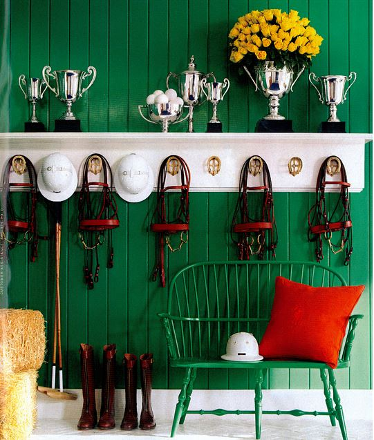
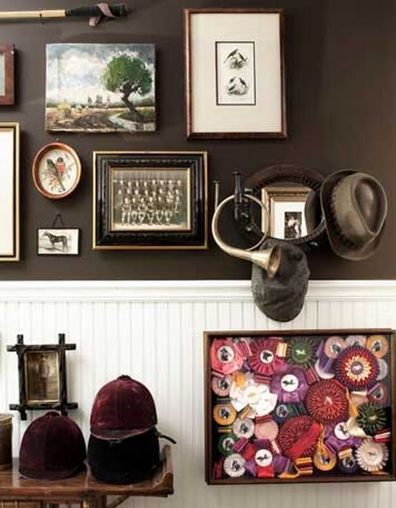

May 4, 2014
Equestrian Style & Kentucky Derby Parties
source
Happy Derby Weekend! Did you watch the Kentucky Derby? Even if you have no interest whatsoever in horses or horse racing or even horse decorating, you need to read at least the first few paragraphs from this article. Here. You will get a lump in your throat and tears in your eyes. California Chrome’s win of the 2 minute race was sweet, to say the least.

source
So let’s talk about horses today. No, not the racing part of the topic – the decorating part. 🙂 There are three little girls in one of the classes in which I work that are totally in love with horses. They could talk about them all day long.
countryliving.com
What is it about girls and horses? I can remember going for pony rides when I was very young, and then later begging my parents for a horse for what seemed like a million times (which we never got. 🙁 ) We had cows, but they weren’t very romantic like horses seemed to me at that age. But even if we never had the actual horse, I could still love anything to do with equestrian style…
Like this fireplace mantel with its artwork and collection of trophies…
And this grand hallway with the wonderful horse art…
And this oh-so-charming kitchen with its equestrian art as well.
And then there is this more formal kitchen that
Amelia Handegan did for a restoration in Virginia. The artwork is just perfect in that room.
Here is another beautiful kitchen with an equestrian touch.
Alison and her family actually live in a home that is a restored former polo barn, and she makes excellent use of equestrian related decor. Their home was featured last Christmas in
Midwest Living magazine. If you haven’t visited her blog, I know you will enjoy it. She even helped with this Kentucky Derby party!
Here is a different table setting I found for another cute Kentucky Derby party. I hope that next year we can have a party, and we won’t be moving a certain princess home from college on the day of the Derby (but I bet we will since it is the first Saturday in May.)
I loved these invitations. Aren’t those envelopes something?!
We would definitely be eating these Kentucky Hot Brown sliders. They sound delicious!
And I’m sure we would have to have these Derby pie bars.
or maybe these Derby pies in a jar would suit us more. 🙂
Be sure to check out her post for the recipe, and you’ll find some great tips for cooking pies in jars there!
Maybe if we are doing college moving again next year at this time, I can just prepare these Derby treats as a lunch to take with us. I think they would travel well (except the Hot Browns wouldn’t be hot.)
And just for pure eye candy for you, here are two mood boards that I love. If you see something there that catches your eye, be sure to click on the link and take a look at the sources at Snippet and Ink (another lovely website.)
A horse themed wedding….
and a Kentucky Derby style wedding. 🙂
I love the hat and white dress in the bottom photo. Could you wear that to the Kentucky Derby? It might be a bit too tame from what I have seen of the hats worn to that event!
And finally for the last of the equestrian theme today, how about a movie? Did you watch Disney’s movie, Secretariat a few years ago? I loved it!
Julia, at
Hooked on Houses has a great post on the house used in the filming of the interior.
and of course, I loved the kitchen in it!
And that brings us to the end of all our equestrian related things – from art to parties to food to weddings to a movie! Goodness this post has gone in a lot of different directions! 🙂
I hope you had a great weekend. Did you watch the Kentucky Derby?
We’d love to hear!

You might enjoy these posts:


.png)
.PNG)
.PNG)
.PNG)
.PNG)
.PNG)
.JPG)
.JPG)
.PNG)
.PNG)


.PNG)
Well I sure missed reading your last two posts. My family and I went on a little holiday southbound! Kelly, I too like all things equestrian. Must be because of the plaid which features all red and green. I will take a peak at the blogs. There is much eye candy here for sure. Thanks for sharing.
My uncle used to show horses. I have always loved them, but have never learned to ride. My sister in-law and niece ride. We have the land to have some horses, but…I will have to keep dreaming and enjoy the neighbors horses. So many ways to decorate with horses. It doesn’t have to all be western with cowboys. I love the more elegant ways to decorate with horses.
I read Shirley’s comment about the emails. I’m not having any problems with that, but I have had some WordPress readers that have told me they can’t leave a comment and there is one blog I can’t leave a comment on. I think it is on WordPress’ end. So frustrating.
I, too, begged my parents for a horse. Each year when I went away to summer camp, I came home to find a surprise. I just knew that this one particular summer I would come home to find “my horse”. It didn’t happen. However, my daddy did make a horse for me from metal and I still have it 45 years later!
———————————————————————
Well I am glad to know that I am not the only disappointed daughter. 🙂 That is wonderful that you have kept your handmade metal horse for yourself after all these years.
Kelly
I so love the equestrian style…and truly love Alison’s home!…I have that magazine of her feature and it is fabulous!….Kelly, just an FYI…I am not getting your posts in my email .. just happened recently and did not know if you have received notice from anyone else of this situation…
———————————————————————
All of Alison’s home is amazing!! She has the perfect touch of equestrian style throughout the whole thing. Thank you for letting me know about your email. I have done a little research, a little checking on forums, and I emailed Rhoda as well. It is a problem that seems to be happening with all blogs. I have had a number of readers contact me about it. I think it started around April 7 when yahoo and aol put up something that changed how they receive emails for the people who had addresses with them. I have tried something at feedburner to see if it works. I won’t know until I publish another post. Hopefully it will get all figured out! Thanks again!
Kelly
Love to watch the Derby every year, and I always pick the wrong horse-oh well! I’ve hardly been on horses though, only the kind who know the route and you really just sit there while they take a very slow stroll. Beautiful animals though! So happy for the owner to win this year’s race, and I actually hoped his jockey was going to win, wonderful!
———————————————————————-
Good thing you are not a gambling woman then Marianne!LOL I will be hoping that California Chrome can win the Preakness in two weeks. The story behind all of those involved in his win was amazing.
Kelly
What a great post and yes, we did watch. What a wonderful win it was! How fun it would be to attend the derby and get to wear a spectacular hat and dress. Mommy dreams, Ha! Yes, little girl dreams do always include horses, doesn’t it? I took lessons in my early twenties for a short while, as well as letting our “animal lover” second daughter take some too. Of late, have only gone on a Colorado trail ride in 2009 on an all girl trip. It was beautiful yet hair raising, as my eldest daughter’s horse decided to have a mind of his own and redirect the lead on the side of a mountain outside Rocky Mountain National Park. Yow! We still talk about it. Well, I am going to have to further investigate your post with some of the links. You always have great pictures and shares. I have to get moving and make the most of some “sunshine weather” here in the Midwest. Hope all went well on the move. There was a move this weekend here too. Our Chicago one moved to a new apartment but luckily she only needed our son and his truck. Happy organizing in the weeks ahead Kelly, as if you aren’t busy enough.
Debra
—————————————————————————
I would have had a heart attack if I had seen a horse get that close to the edge!! (Terrible fear of heights here.) Please do click on the links so that you can enjoy the posts from others. We did get some things put away, and I tried to work in the attic, but it was just too hot. It got up to 92 degrees today, so the attic was not a fun place to be. I will need to wait on an evening or a rainy day to do that.
Kelly
Yes indeedy! I love the races, but more for the horses. my youngest is an equestrian eventer,so it is rooted in this casa! Love all of that inspiration!
——————————————————————-
Then you most certainly have a love for the animals and the race. How fun to work with equestrian events! Glad you enjoyed all the horse inspiration. 🙂
Kelly
I have long loved the Kentucky Derby as I am a certified hat wearer and enjoy every good opportunity. This years race however was VERY special.
I grew up in a small farming town. It was filled with kindhearted hard working people. Saturday’s were filled with 4-H and FFA events.
While I moved away long ago from Yuba City I gave a huge cheer for California Chrome owners Perry and Denise Martin. They are hardworking kindhearted people who happen to live in my same small hometown.
Sometimes Good Guys do finish first!
———————————————————————
How cool is that?! Then yes, that race should have been quite special for you! Love it. I hope California Chrome goes on to win the Preakness in a couple of weeks.
Kelly
We lived in LOUAVUL for almost four years. Derby week was a big deal. We never went to the Derby but we enjoyed the hot air balloons and the Derby parade. And Derby Pie was always a favorite dessert in our family. We have to watch the Derby and we remind our son who was born in Louisville that he must sing MY Old Kentucky Home each year!!
———————————————————————
If you lived there, then you were wrapped in equestrian fever, Arlene! How fun that would be!! I know those hot air balloons must have been a gorgeous sight to see. 🙂
Kelly
Hi Kelly, this post was so much fun! Our best friends and my husband and I went for the first time last year to the Saratoga Races (NY: the New England version of the Kentucky derby) and had SO much fun, that we can’t wait to go back this year. We drove our Miata Convertibles there on a gorgeous August day. I love everything equestrian and racing. In Saratoga most people (but not all) were dressed so beautifully with large hats and dresses, suits and ties (even the little ones). FYI, for your 3 horse loving students, my mother’s best friend wrote the series “Pony Pals,” which my daughter loved at that age.
———————————————————————-
Oh, I love a Miata!!! I wanted a red one for years! A friend of ours has a lovely dark green one. The Saratoga Races would be a lot of fun to see. I will have to recommend your Pony Pals to my horse-loving girls at school. I know they will love them! Thanks for the recommendation. 🙂
Kelly
Love the Derby and can’t wait to see all of it. I am always glued to the TV. Great post and I love all the horse paintings, so beautiful.
———————————————————————-
Thank you for stopping by Marty. So glad you enjoyed the post on all the horse related things! Next year I sure hope we can do a Derby party. 🙂
Kelly
Hi Kelly: yes..we watched the KY Derby this past Sat and even though we are origionally from Pa. but have lived in Ohio for 47 years I too still have my eyes swell with tears when I hear My Old Kentucky Home sung. What is that!!!:-) Anyway, when my two oldest granddaughters were younger, they absolutly loved horses. So one Christmas all they got was horse-themed presents from blankets, to boots to horse ornaments. They loved it and it was one of the most fun-filled holidays we experienced. So enjoyed your post! Saved the recipes and look forward to making them as well. Thank you for all the wonderful ideas!
———————————————————————
Aw what a sweet Christmas!! I know your granddaughters loved that one! Glad you could use the links to find those good recipes. I am so wanting to try the pie in the jar. 🙂
Kelly
We watched – always do…no pie but a Mint Julep (without the mint…forgot to buy some!) was enjoyed by all. Love this post, because I STILL want a horse, even at my age; I’d love to be far enough out to have a horse and some chickens. I hope to work volunteering at the Equine Therapy center near our house, maybe that will take care of my “horse fix” and do good at the same time. Enjoy the end of the year – we are down to 16 days!
———————————————————————–
Yes, doing the volunteer work just might give you that horse fix. How wonderful! We are down to 15 days, and I took today off to put away all the college things that came back here over the weekend. I am off to create space where there is none. 🙂
Kelly
Kelly,
I love equine style rooms. This race stole my heart, I was so excited to read the story of the horse, trainer, owners and rider. I may have to plan better next year and host a Kentucky Derby party.
Thanks for this inspiration.
Karen
———————————————————————–
Stealing your heart is such a good way to put the stories behind this year’s race. It was all so touching to me. You should do a party for next year or maybe even one in a couple of weeks when California Chrome runs in the Preakness. 🙂
Kelly
Kelly,
We did not watch or go to a Kentucky Derbyshire party this year. Our daughter had an athletic banquet we were attending. We usually go to two parties each year. I have been to Churchill downs and it is so neat. I love mint julips! Your inspirational photos are so interesting. I love the top one with the green wall and bench. Thanks for sharing with us.
———————————————————————–
Wow, you have actually been there! From the photos I have seen, it looks like crowds upon crowds. What an event! Too bad you did not get to enjoy the parties this year. The photo with the green wall was just for you. 🙂 I love anything from Ralph Lauren, and he is such a master of equestrian styling.
Kelly
My husband is from Kentucky so it is just downright against his religion to not watch the Derby. You probably already know this but my brother explained the “DAP” emblem on the jockey’s jacket and the horse. Seems the two partners who bought California Chrome’s mother for $8,000 overheard a bystander say'”only a dumb a__ would buy that horse”. Hence they started calling themselves dumb a__ partners……DAP. Guess they are laughing all the way to the bank!
———————————————————————-
I did not know that! How funny, and what a way to show ’em!! 🙂 I know your husband enjoyed the Derby this weekend.
Have a great week!
Kelly
I was just thinking about the movie SECRETARIAT earlier this week. I loved that movie, and I loved that horse–I actually cried when I heard that he had died. You are absolutely right about girls loving horses–I did and my daughter did, too. Right now I’d just be thrilled to have an Ethan Allen blacksmith sign featuring a horse, rather than have one I’d have to feed and clean up after. Ha! They are beautiful creatures though.
I am definitely going to have to try those Derby pies in a jar. And maybe a derby hat…I always wished we were more of a hat society. 🙂 Thanks for the great post and have a wonderful week!
———————————————————————
Too funny about preferring a sign! They’re like swimming pools – beautiful but a ton of work (and expensive as well!) I don’t know if I could be a “hat” person – although I did have a hat for my wedding veil. Hats just make me hot – but they do add so much fashion to an outfit. Thanks for reading, visiting the blog, and leaving your comment Mimi!
You have a good week too.
Kelly
Oh, yeah, you know I did!! Always do and always shed a tear or two when they sing my “Old Kentucky Home” — far away!! Makes me soo homesick!! Made Ky Derby pie for the first time– and yes, there is bourbon in it, of course!! ( 1 T) 🙂 Believe it or not, I have not had Ky hot brown — oh my, must try this recipe!! Thank you for a wonderful post about my home state! I’m off here to tell my friends to have a look!!
———————————————————————-
Yes, I know YOU did! That goes without asking. LOL I can’t believe you have never made the derby pie before. Hope it turned out delicious! (How could anything with chocolate and pecans not be delicious?) Thanks for sharing the blog love!
Kelly